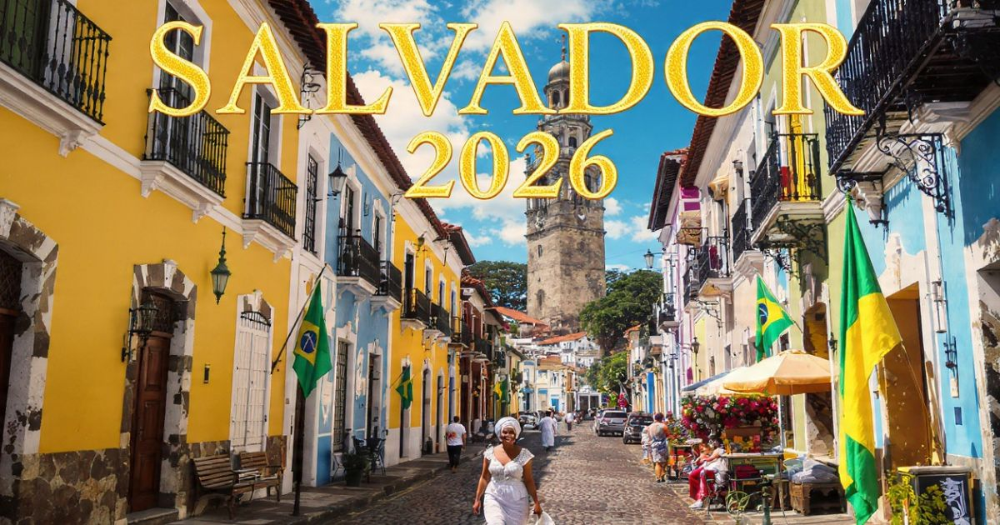

Salvador 2026: guia completo para viajar para a capital da Bahia
Introdução: a capital da alegria e da cultura afro-brasileira
Salvador é, sem dúvida, uma das cidades mais vibrantes e encantadoras do Brasil. Capital da Bahia, a cidade respira história, cultura e alegria, com sua herança afro-brasileira, sua música contagiante, sua culinária deliciosa e sua hospitalidade calorosa. Seja para explorar o Pelourinho, dançar ao som do axé, experimentar a moqueca, ou simplesmente relaxar nas belas praias da região, Salvador oferece experiências inesquecíveis para todos os perfis de viajantes.
Em 2026, Salvador continua sendo um dos destinos preferidos dos viajantes brasileiros e estrangeiros. A cidade se prepara para receber turistas do mundo inteiro com uma infraestrutura cada vez mais moderna, mantendo seu charme histórico e sua essência única. A cidade também é conhecida por suas festas populares, como o Carnaval, a Lavagem do Bonfim e a Festa de Iemanjá, que atraem visitantes de todos os cantos do mundo.
Neste guia completo sobre Salvador, você vai encontrar tudo o que precisa saber para planejar sua viagem: a melhor época para visitar, as atrações imperdíveis, os melhores bairros para se hospedar, como se locomover pela cidade, dicas de gastronomia, compras e muito mais.
Nosso objetivo é que você chegue a Salvador preparado para aproveitar ao máximo cada minuto nessa cidade fascinante. Afinal, Salvador é mais do que um destino — é uma experiência que combina história, cultura, gastronomia e a calorosa hospitalidade baiana em um só lugar.

O histórico Pelourinho e o Elevador Lacerda, símbolos de Salvador
Melhor época para visitar Salvador
Salvador tem um clima tropical, com temperaturas elevadas durante todo o ano. A escolha da melhor época depende do que você busca na viagem.
Verão (dezembro a março) — Época mais quente do ano, com temperaturas que podem ultrapassar 30°C. A cidade fica cheia de turistas, especialmente durante o Carnaval (fevereiro/março). Os preços são mais altos e as praias e ruas ficam lotadas. É a época mais animada da cidade, com uma programação intensa de eventos e festas.
Outono (abril a junho) — Uma das melhores épocas para visitar Salvador. As temperaturas são agradáveis (entre 25°C e 30°C), o sol ainda está presente, e a cidade oferece uma atmosfera relaxada. Os preços dos hotéis são mais acessíveis que no verão. É a época ideal para quem quer conhecer a cidade com mais tranquilidade.
Inverno (julho a setembro) — A estação mais seca do ano, com temperaturas entre 22°C e 28°C. Os dias são ensolarados e as noites são frescas. É a melhor época para quem quer explorar a cidade sem o calor intenso do verão. Os preços dos hotéis são mais baixos. É também a época da Festa de Iemanjá (setembro).
Primavera (outubro a novembro) — As temperaturas começam a subir (entre 25°C e 30°C), os dias ficam mais longos e a cidade ganha vida. Os preços dos hotéis começam a subir com a chegada da alta temporada. É a época das flores e da natureza exuberante.
Dica: Se você quer evitar as multidões e os preços altos, o outono (abril/junho) e o inverno (julho/agosto) são as melhores escolhas. Se quer viver o Carnaval, planeje sua viagem com muita antecedência!
O que fazer em Salvador: atrações imperdíveis
Salvador tem uma lista quase infinita de atrações. Separamos as imperdíveis para que você não perca nada:
Pelourinho — O centro histórico de Salvador, Patrimônio Mundial da UNESCO. O Pelourinho é um dos conjuntos arquitetônicos mais bonitos do Brasil, com suas ruas de paralelepípedos, igrejas barrocas, casarões coloridos e uma atmosfera única. Explore as ruas, visite a Igreja de São Francisco, o Museu da Cidade e a Casa do Benin.
Elevador Lacerda — O elevador mais famoso do Brasil, que conecta a Cidade Alta (Pelourinho) à Cidade Baixa (Comércio). A vista do elevador é uma das mais bonitas de Salvador. A viagem é curta, mas a experiência é imperdível.
Igreja do Bonfim — A igreja mais famosa de Salvador, dedicada ao Senhor do Bonfim. A igreja é um símbolo da fé baiana e atrai milhares de fiéis e turistas. A tradicional Lavagem do Bonfim (em janeiro) é uma das festas mais importantes da cidade.
Mercado Modelo — O mercado de artesanato mais famoso de Salvador, localizado na Cidade Baixa. Encontre artesanato, roupas, instrumentos musicais, comidas típicas e muito mais. O mercado é uma experiência autêntica e uma ótima oportunidade para comprar souvenirs.
Farol da Barra — O farol mais famoso de Salvador, localizado na Praia do Porto da Barra. O farol é um símbolo da cidade e oferece uma vista linda do pôr do sol. A Praia do Porto da Barra é uma das praias mais famosas da cidade.
Praia de Itapuã — A praia mais famosa de Salvador, imortalizada na música de Vinícius de Moraes. A praia é bela e tranquila, com suas dunas, coqueiros e o famoso "Poço da Draga". É o lugar perfeito para relaxar e curtir o dia.
Dique do Tororó — O lago mais famoso de Salvador, com suas esculturas de orixás. O Dique é um local agradável para caminhar, fazer piqueniques e apreciar a vista do pôr do sol.
Cidade Baixa e Comércio — A região histórica de Salvador, com o Mercado Modelo, o Elevador Lacerda e a Feira de São Joaquim. Explore as ruas, os mercados e sinta a atmosfera autêntica da cidade.
Onde ficar em Salvador: melhores bairros
Escolher onde se hospedar é uma das decisões mais importantes da viagem. Cada bairro de Salvador tem sua personalidade:
Pelourinho (Centro Histórico) — O coração histórico de Salvador, com ruas de paralelepípedos, igrejas barrocas e uma atmosfera única. Ficar no Pelourinho significa estar imerso na história e na cultura baiana. Os preços são variados.
Barra — O bairro mais famoso de Salvador, com sua praia, seu farol e sua vida noturna. Ficar na Barra significa estar perto da praia, dos bares e da animação. Os preços são elevados.
Rio Vermelho — O bairro boêmio de Salvador, com bares, restaurantes, casas de show e uma atmosfera vibrante. Ficar em Rio Vermelho significa estar perto da vida noturna e da cultura. Os preços são moderados.
Itapuã — O bairro da praia famosa, com sua atmosfera tranquila e suas belezas naturais. Ficar em Itapuã significa estar perto da natureza e do sossego. Os preços são acessíveis.
Stella Maris — O bairro de praias calmas, com hotéis resorts e uma atmosfera familiar. Ficar em Stella Maris significa estar perto de belas praias e de opções de lazer. Os preços são variados.
Dica: Para quem visita Salvador pela primeira vez, o Pelourinho e a Barra são as melhores opções pela localização. Para quem busca economia e autenticidade, Rio Vermelho e Itapuã são ótimas escolhas.
Como chegar a Salvador
Chegar a Salvador é fácil, com voos diretos do Brasil e conexões eficientes.
Avião — Aeroporto:
- Aeroporto Internacional de Salvador (SSA) — O principal aeroporto da Bahia. Recebe voos nacionais e internacionais. Fica a cerca de 20 km do centro e tem conexões de ônibus e transfer.
Como ir do aeroporto ao centro:
- Ônibus: Para o centro (R$ 4-10, 40-60 min).
- Táxi/Uber: R$ 60-100.
Visto e documentação: Para brasileiros, apenas RG ou CNH são necessários (viagem doméstica). Para estrangeiros, é necessário passaporte válido e, dependendo da nacionalidade, visto.
Transporte em Salvador: como se locomover
Salvador tem uma boa rede de transporte público, mas a cidade também é muito agradável para explorar a pé em algumas áreas.
Ônibus:
- Ampla rede de ônibus cobre toda a cidade.
- Tarifa: R$ 4,80 por viagem.
Metrô:
- Linhas 1 e 2 cobrem algumas áreas da cidade.
- Tarifa: R$ 4,80 por viagem.
Táxis e aplicativos:
- Tarifa inicial: R$ 5,50 + R$ 2,50 por km.
- Uber e 99 disponíveis.
Dica: O transporte público em Salvador é eficiente, mas o trânsito pode ser intenso. Para se locomover entre os principais pontos turísticos, use aplicativos de transporte ou ônibus com ar-condicionado.
Gastronomia em Salvador: o que comer
Salvador é o paraíso da culinária baiana, com influências africanas, portuguesas e indígenas. Confira o que não perder:
Acarajé — A iguaria mais famosa da culinária baiana. É um bolinho de feijão-fradinho frito em azeite de dendê, recheado com vatapá, caruru, camarão seco e pimenta. Experimente nas baianas de acarajé do Pelourinho ou da Barra.
Moqueca — O prato mais famoso da Bahia, preparado com peixe, frutos do mar, azeite de dendê, leite de coco, pimentão e coentro. A moqueca baiana é servida com arroz e pirão.
Vatapá — Uma pasta cremosa feita com pão, camarão, leite de coco, azeite de dendê e amendoim, servida com arroz ou acompanhando o acarajé.
Caruru — Um prato feito com quiabo, camarão e azeite de dendê, servido com arroz.
Cocada — O doce mais famoso da Bahia, feito com coco e açúcar. Encontre em barracas de praia e mercados.
Caipirinha de frutas — A caipirinha baiana é feita com frutas regionais, como caju, maracujá ou limão.
Compras em Salvador: o que levar para casa
Salvador é um paraíso para as compras, com opções para todos os gostos.
Mercado Modelo: O mercado de artesanato mais famoso de Salvador, com roupas, acessórios, instrumentos musicais, comidas típicas e muito mais.
Feira de São Joaquim: A feira mais autêntica de Salvador, com produtos regionais, comidas típicas e artesanato.
Pelourinho: Lojas de artesanato, roupas típicas e acessórios.
Souvenirs:
- Miniaturas do Elevador Lacerda
- Chaveiros e imãs com símbolos da Bahia
- Fitinhas do Senhor do Bonfim
- Bonecas Abayomi
- Instrumentos musicais (atabaque, pandeiro)
- Produtos de dendê e azeite de dendê
- Camisetas com estampas baianas
Dicas de economia em Salvador
- Use o transporte público — O ônibus e o metrô são mais baratos que táxis e aplicativos.
- Visite atrações gratuitas — Muitas igrejas e museus têm entrada gratuita em determinados dias.
- Alimente-se em quiosques e mercados — Em vez de restaurantes caros, experimente os quiosques de praia e os mercados.
- Compre artesanato no Mercado Modelo — É o melhor lugar para comprar souvenirs, com preços mais baixos.
Salvador é uma cidade que combina história, cultura, gastronomia e alegria de forma única! Não deixe de provar o acarajé das baianas, explore o Pelourinho e curta as praias da Barra e de Itapuã. E o mais importante: deixe-se levar pela energia da cidade — Salvador é feita para ser vivida e sentida!
❓ Perguntas Frequentes sobre Salvador
Recomenda-se pelo menos 5 a 7 dias para explorar Salvador com calma. Com 5 dias, você consegue visitar as principais atrações (Pelourinho, Barra, Itapuã). Com 7 dias, pode incluir uma excursão para a Ilha de Itaparica ou o Recôncavo Baiano.
O outono (abril/junho) e o inverno (julho/agosto) são as melhores épocas, com clima agradável e menos multidões. O verão é quente e lotado, mas é a época do Carnaval.
Sim, mas com precauções básicas: evite andar com objetos de valor à mostra, não entre em áreas periféricas sem guia e prefira regiões turísticas à noite.
Uma viagem de 7 dias para Salvador custa entre R$ 3.000 e R$ 8.000 (incluindo passagens, hospedagem, alimentação e atrações).
Dia 1: Pelourinho, Elevador Lacerda, Mercado Modelo, Igreja do Bonfim; Dia 2: Farol da Barra, Praia do Porto da Barra, Dique do Tororó; Dia 3: Praia de Itapuã, Abaeté, Rio Vermelho.
As praias mais famosas são a Praia do Porto da Barra (próxima ao farol) e a Praia de Itapuã. Para famílias, Stella Maris é uma boa opção. Para quem busca tranquilidade, a Praia do Flamengo.
O metrô de Salvador é seguro. Os ônibus também são uma opção, mas evite os horários de pico e regiões periféricas à noite.
Roupas leves, protetor solar, chapéu, biquíni/maiô, chinelos, e uma blusa leve para a noite. Não se esqueça de um repelente!